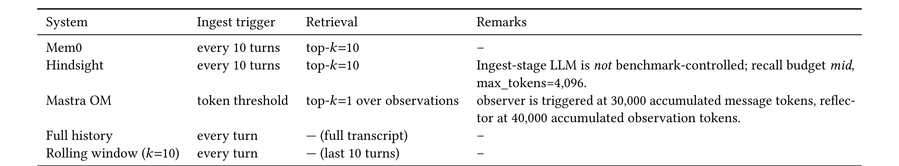
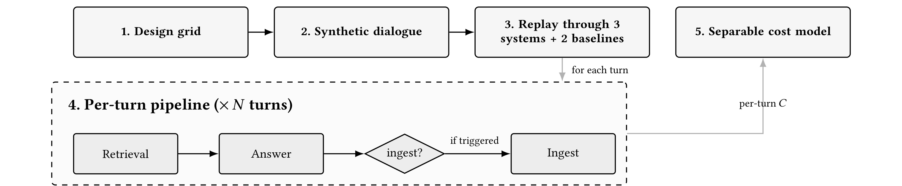
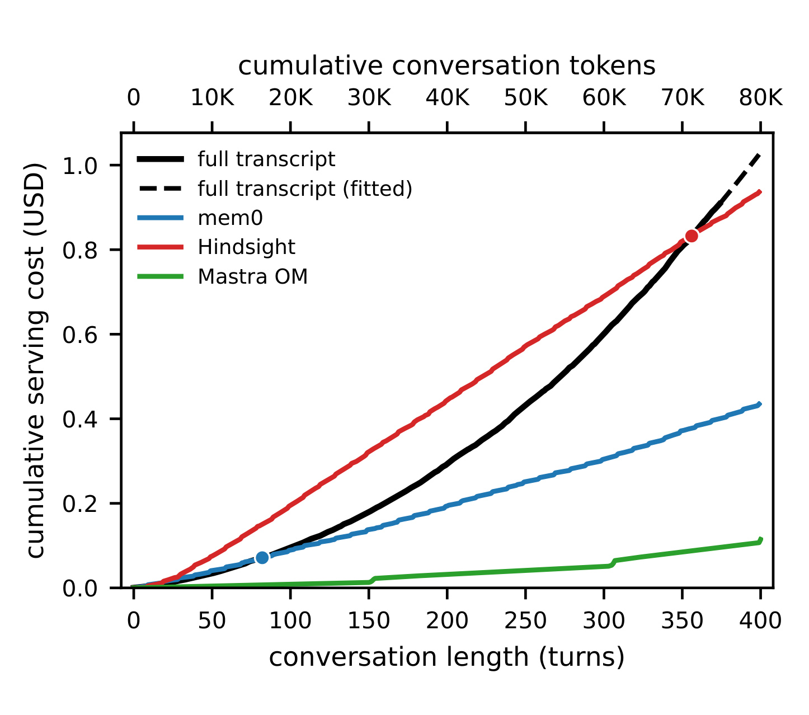
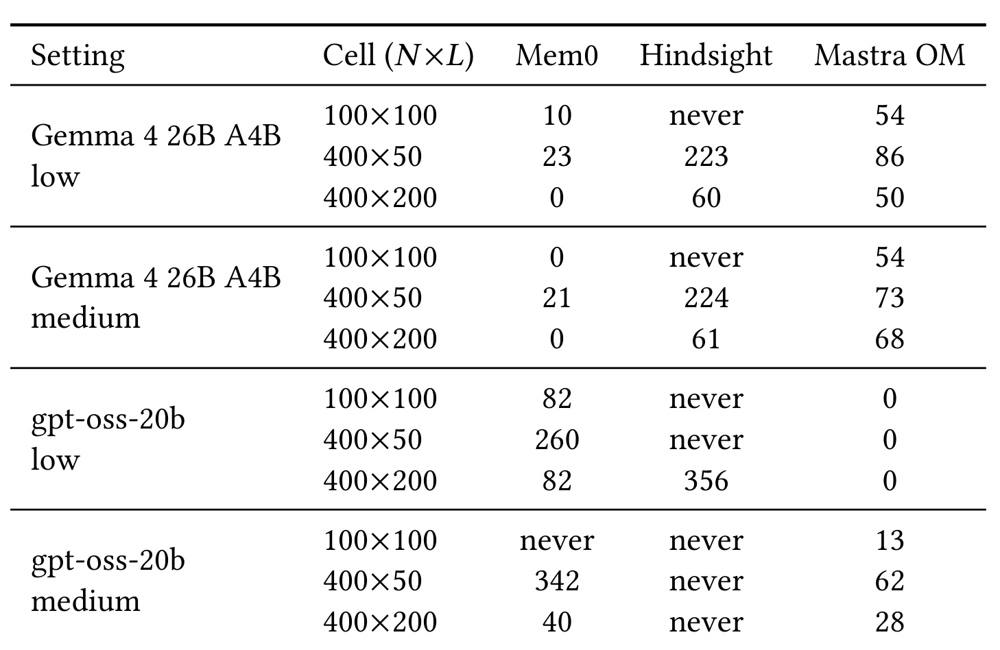
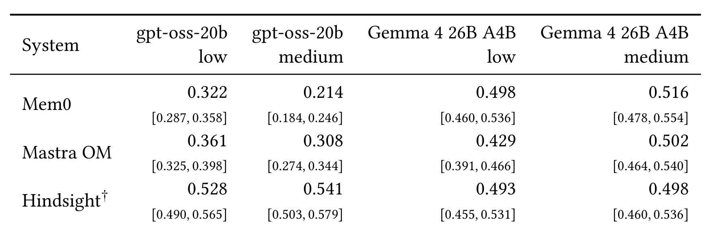
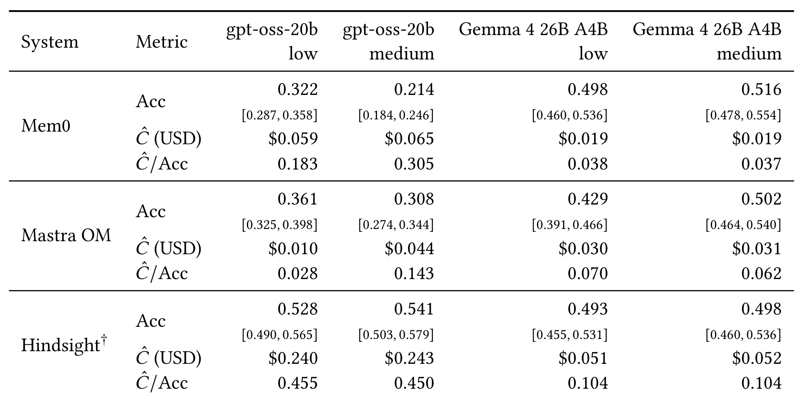
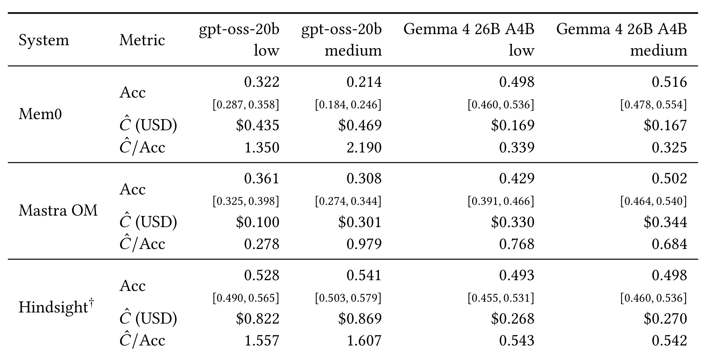
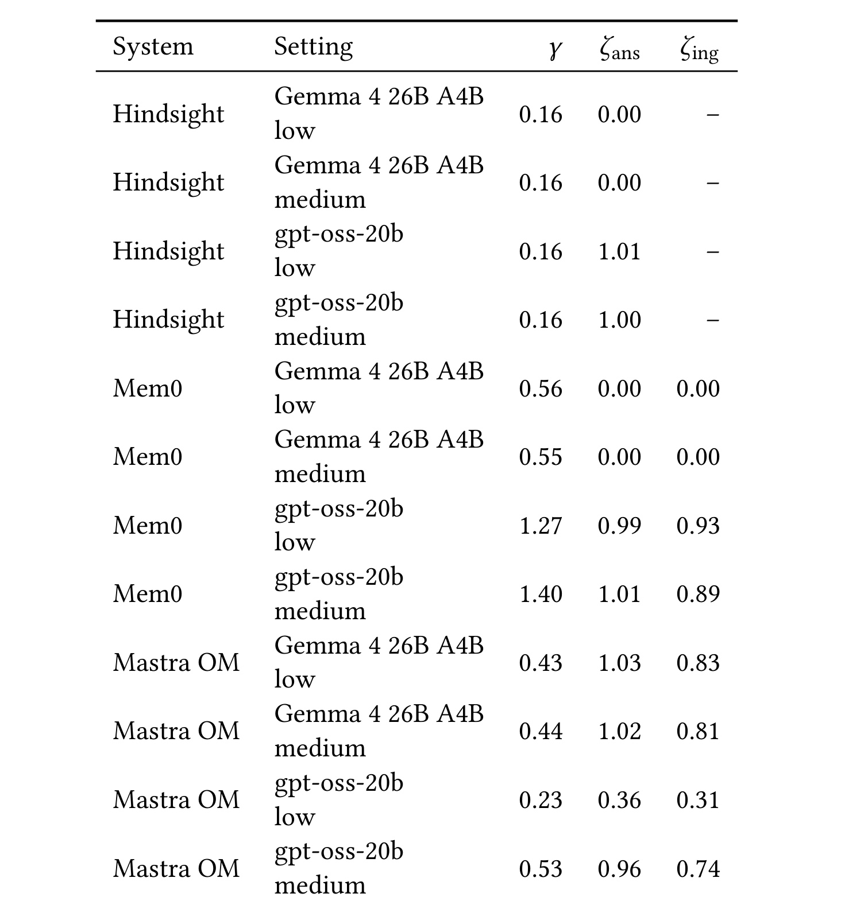

Total Recall at What Cost?：Agentic Memory Serving 成本精读
《Total Recall at What Cost? Benchmarking the Serving Cost of Agentic Memory Systems》由 Bricks Technology 的 Natchanon Pollertlam 与 Witchayut Kornsuwannawit 完成，于 2026 年 8 月 12 日提交。论文入口为 arXiv:2608.11879。作者把 Mem0、Hindsight、Mastra Observational Memory 放进同一套成本与准确率基准，与十轮滚动窗口、每轮重发完整 transcript 两条透明基线比较；本轮未核验到独立配套代码仓库，参考文献中的依赖项目不视为本文代码。
这篇论文最值得读的地方，不是宣布某一种 memory architecture 胜出，而是把“记忆能节省上下文 token”拆成可测量的 serving 经济问题：记忆系统自身有摄取、检索、回答、反思和合并调用，成本曲线可能由内部状态触发，不能只看对话有多长。作者在两个 backbone、两档 reasoning effort、最长 400 轮的主要 workload 上记录成本，再用 665 个 LoCoMo 问题给同一配置配上准确率，最终讨论的是 workload-conditioned choice，而不是静态排行榜。
长期运行的对话 Agent 常用记忆系统替代不断增长的完整 transcript，但事实抽取、检索、反思与合并本身也会触发可计费的模型调用。现有评测几乎只看召回和准确率，因此部署者无法回答：在统一 backbone 与计价条件下，记忆系统究竟要花多少钱，又要到第几轮才真正比重发完整历史更便宜？
1. 背景和问题
1.1 从“记住什么”转向“为记住付多少钱”
长期对话 Agent 要跨会话复用人物、偏好、计划、日期和关系等信息，最直接的做法是每轮把全部历史重新塞进上下文。这个方案几乎没有额外状态机：输入随轮次累计增长，模型在每次回答时自行注意历史事实。它的优点是语义信息保留最完整、实现边界透明；缺点也很清楚，若平均单轮消息为 (L) 个 token，第 (t) 轮所见历史近似随 (L\times t) 增长，累计账单呈凸增趋势，最终还会撞上上下文长度上限。
另一端是固定十轮滚动窗口。它只保留最近十轮，不做持久化，因此随着会话继续，单轮输入不会再按深度线性膨胀。它很便宜，却会主动遗忘窗口外事实。生产系统真正常用的第三条路，是把历史压缩进外部记忆：摄取时抽取事实或观察，查询时检索相关条目，再把少量 payload 交给回答模型。理论叙事通常把它概括为“用小检索结果替代大 transcript”，但这种说法只看到了 answer prompt，没有计算建库过程本身。
Mem0 每隔若干轮调用模型抽取原子事实并写入向量库；Hindsight 用 retain-recall-reflect 管线形成更丰富的记忆；Mastra OM 则维护 observation buffer，并在累计 token 达阈值时触发 observer 与 reflector。它们不是同一种检索器的三个实现，而是三套不同的 LLM 调用拓扑。一次 flush 可能把前几轮省下的 token 全部“补缴”，阈值式反思还会令成本曲线产生台阶。因此，memory payload 很短并不等于 end-to-end serving 很便宜；必须把 ingest、retrieval、answer 各阶段的账单放在一起。
1.2 现有长记忆评测缺少共同成本坐标
LoCoMo、LongMemEval、PersonaMem 等工作主要回答“系统是否能从很长的交互里找回正确事实”。这一研究线很重要，却很难支持部署决策：各系统往往使用不同 backbone、不同 provider、不同 embedding 和不同 reasoning 配置，成本只以零散的 token saving 或 latency 数字出现。一个系统准确率高，可能是因为在 ingest 时使用了更强、更昂贵的模型；另一个系统回答便宜，可能把大量支出转移到了观察合并阶段。若不统一配置并记录内部调用，就无法知道差异来自记忆表示、模型价格还是隐藏 pipeline。
本文进一步指出，连“按会话长度估算成本”都可能失效。完整历史和滚动窗口的调用结构由窗口边界决定，消息长度 (L) 与会话深度 (t) 足以解释大部分成本变化；记忆系统却有未显式进入这两个变量的状态，例如事实密度、buffer 是否达到阈值、被检索条目长度、provider cache 是否命中。相同的 ((L,t)) 组合可能处在完全不同的内部阶段。作者因此不把回归误差只当作模型做得不够好，而把 held-out failure 当成一个系统发现：如果只暴露对话统计量，运维侧就无法可靠预算 memory serving。
1.3 论文要回答的三个部署问题
第一，能否用对话深度和消息大小预测每轮成本？作者把二者拆成两个指数，检查模型对透明基线和 memory system 的解释能力，并用 leave-one-cell-out 而不是只报训练内拟合优度。第二，记忆系统何时“回本”？这里不是某一轮瞬间比 full history 便宜，而是累计成本首次跌到其下方，并在之后所有测量轮都保持更低。这个 sustained 定义避免阈值触发造成的假交叉。第三，在节约成本的同时是否保住回答质量？论文把每个 setting 的 LoCoMo accuracy 与同一 setting 的服务成本配对，构造成本/正确率比。
这三个问题对推荐系统也有直接对应。长期用户画像、跨 session 兴趣与对话式推荐同样需要在“重放全部行为”“截断近期窗口”“维护压缩用户状态”之间选择。真正的线上预算不能只看召回库大小，还要计算特征更新、摘要重写、向量化、检索、生成和 provider cache 的联合支出。不过本文研究的是对话 memory benchmark，不包含推荐线上流量、延迟 SLA 或增量画像精度；其价值是提供测量框架，而不是直接给出某条推荐链路的成本答案。
2. 方法
2.1 被比较的系统与统一控制面
实验把三种架构跨度较大的记忆系统放在共同 harness 下。Mem0 代表平坦的 extract-and-retrieve：每十轮触发 ingest，把事实写入记忆，查询时取 top-10。Hindsight 同样每十轮 ingest、取 top-10，但摄取侧包含保留、反思和排序等外部服务流程。Mastra OM 不是固定轮数触发：累计 message token 到 30,000 时运行 observer，累计 observation token 到 40,000 时运行 reflector，查询只取 top-1 observation。两条参考线分别是每轮提交最近十轮的 rolling window，以及每轮提交完整历史的 full history。
作者为所有系统统一 answer-stage backbone：gpt-oss-20b 与 Gemma 4 26B A4B，各自运行 low、medium 两档 reasoning effort；embedding 固定为 pplx-embed-v1-0.6b。两种模型都使用 temperature 0.7 和 max_tokens 32,768。需要特别强调，统一控制并不完美：Hindsight 的 ingest 运行在外部 self-hosted HTTP server，基础环境覆盖了 per-cell backbone，因此只有 answer stage 跟随实验网格，摄取侧实际上固定为一套 gpt-oss 配置。作者保留其单 cell 总量，但不把四列当作 Hindsight 的跨 backbone 因果实验。

Table 5 把成本差异的结构来源钉得很清楚。Mem0 与 Hindsight 看起来同为“每十轮、top-10”，但后者备注栏暴露了 ingest LLM 不受 benchmark 控制；因此相同触发周期不意味着相同成本。Mastra OM 的 top-1 看似最省检索 payload，但其 observer/reflector 由 30k/40k token 状态阈值触发，成本会出现阶段性跳跃。full history 与 rolling window 每轮都执行，却没有额外检索调用。这个表说明公平比较的单位必须是完整 pipeline，而不是只比较 top-k 或回答 prompt 长度；也解释了为什么后文简单的 (L,t) 回归对 memory system 持出失败。
2.2 成本基准流水线与可复现网格
成本实验的主网格由五个 ((N,L)) cell 构成：((15,50))、((15,200))、((100,100))、((400,50))、((400,200))。这里 (N) 是会话总轮数，(L) 是平均单轮 token 数。每个 memory-system cell 用八个随机种子重复；Mastra OM 额外增加 ((800,200)) 与 ((800,400))，各三次，用来进入阈值触发区。确定性基线则使用八个 cell、每格两次，其中补了等总内容但深度和单轮长度不同的组合，从而分辨“很多短消息”和“少量长消息”。
每个 ((N,L,seed)) 先由 LLM 生成双人私人对话，包含名字、日期、偏好、日程和关系等可抽取事实。生成器以 20 轮为 chunk，使用 o200k_base 计数；超过 (1.15L) 的 turn 被截短，低于 (0.85L) 的 turn 用 filler 补足。完成的对话按网格键缓存，所有系统和重复运行读取完全相同的文本。这样，系统成本差异不再混入不同对话长度或随机内容的噪声；但内容仍是合成的，真实会话的事实密度是否相同要留到局限部分讨论。

Figure 1 展示了完整信息流。先选设计网格，再生成并缓存对话，随后让三套记忆系统与两条基线 replay 同一输入。每个 turn 内部依次执行 retrieval 与 answer，并通过 ingest gate 判断是否 flush buffer；被计入 (C) 的是这些阶段合计的可计费 input tokens。最后才按 system-model 组合拟合成本曲线。图中 ingest 位于条件分支而非固定流水线尾部，这一点非常关键：当阈值或十轮周期触发时，当前轮成本可以明显偏离由 (L,t) 推测的平滑趋势。图中从缓存对话到五套配置的统一 replay，还保证系统间差异不是由输入文本变化造成。论文测的是“服务一段持续对话的内部调用轨迹”，不是只测最后一次回答。
2.3 可分离成本模型与持出验证
作者没有把累计内容压成单变量 (N\cdot L)，而是对当前轮分别保留消息大小与会话深度，按每个 system-model 拟合论文唯一的编号公式：
符号解释：(C) 是该轮 ingest、retrieval、answer 合计的可计费 LLM input tokens；(L) 是会话平均单轮消息 token 数；(t) 是当前轮深度；(a) 是某个 system-model 组合的截距；(p) 表示成本对消息长度的弹性，(q) 表示成本对会话深度的弹性。加一用于容纳零附近取对数。若 full history 每轮重发全部内容，应有 (p\approx q\approx1)；若滚动窗口被固定在十轮，(q) 应接近零而 (p) 仍较大。这使指数有可检验的机制含义。
拟合使用每个 run 的全部 turn，但验收不止看 in-sample (R^2)。作者按 ((N,L)) cell 做 leave-one-cell-out：删掉一个 workload cell，在其余 cell 上重拟合，再预测被删 cell 的平均单轮成本，以 LOOCV-MAPE 汇总误差。置信区间通过 1,000 次 cluster bootstrap 得到，重采样单位是完整 run，而非相关的单个 turn，因为同一 run 的 transcript、memory store 和 observation buffer 共享状态。这个设计比随机拆 turn 更严格，也更符合部署时“遇到一种新 workload”的外推问题。
为了补充仅看 input-token 指数遗漏的 backbone 行为，原文又在 prose 与 Table 7 中定义三组 token 比率；把它们显式写成公式为：
符号解释：(gamma) 是 API 报告的输出 token 与输入 token 之比；(zeta_{ans}) 是 answer 阶段 reasoning token 与可见回答 token 之比；(zeta_{ing}) 是 ingest 阶段 reasoning token 与可见摄取输出 token 之比。它们不是回归自变量，而是事后诊断：相同 (p,q) 不代表相同输出和思考预算。Hindsight 的 ingest 配置未受控，所以 (zeta_{ing}) 不报告，不能用缺失值暗示其摄取推理开销为零。
2.4 准确率基准与联合决策量
准确率部分从 LoCoMo 选四段完整对话、共 665 个可评问题。作者不是随意抽取，而是让子集在问题类别、证据数量和证据跨度上尽量逼近全集，选择三个轴 Jensen-Shannon divergence 总量最低的组合，并按数据集惯例排除 Category-5 对抗问题。每个 system-setting 先摄取完整会话，再在 retrieval 后以 temperature 0.7 单次回答；judge 固定为 gpt-oss-120b、temperature 0，单次输出 CORRECT 或 WRONG。固定 judge 使配置间评分尺度一致，但并不消除 judge 偏差。
联合指标把目标 workload 上八次重复的平均美元成本与该 setting 的 LoCoMo 准确率相除。原文写作 (widehat C/\widehat{Acc})，这里记为：
符号解释：(widehat C) 是指定 ((N,L)) 下每段完整会话的平均可计费美元成本；(widehat{\mathrm{Acc}}) 是同一 system-setting 在 665 个问题上的正确率；CPA 是论文的 cost-per-correct-answer 比率。它把成本与正确率放进同一数值，却不是完整效用函数，因为没有包含延迟、拒答、检索召回、payload 大小和回答长度等生产约束。
break-even 也不是由回归外推出来。作者累加八次重复平均后的逐轮实测成本，并要求交叉后持续占优；将原文 prose 定义显式化为：
符号解释：(C_i^{mem}) 与 (C_i^{full}) 分别是记忆系统和完整历史在第 (i) 轮的实测成本；(u) 是从候选交叉点向后的任一测量轮；(t_{BE}) 是累计记忆成本首次低于完整历史并在余下区间持续更低的最小轮次。never 只说明测量区间末尾仍未满足，并不证明无限长会话永远不会交叉；反之，turn 0 代表从第一轮开始就更便宜，而非没有 memory overhead。
3. 实验结果
3.1 先看证据覆盖了什么
成本主实验覆盖三套 memory system、两条基线、两个 backbone、两档 reasoning effort。memory cell 通常有八次端到端 run，最长主 cell 为 400 轮；Mastra OM 的额外 800 轮 cell 用于触发其 observer/reflector 阈值。美元成本按实际 provider 的 input、cached input、output 与 embedding 单价换算。准确率只有 LoCoMo 的四段对话、665 问题，并且每个 setting 只测一次准确率，不随成本网格中的 (N,L) 改变。因此 Table 3 与 Table 4 的 accuracy 行完全相同，变化的是 workload 成本和 CPA。
这种配对有一个重要阅读原则：结果能回答“在作者选择的 provider、模型和 LoCoMo 分布上，哪个配置形成怎样的成本-准确率点”，不能直接回答“哪套记忆架构在所有任务上最好”。尤其 Hindsight ingest 未受 per-cell backbone 控制，其单列总成本仍有观察价值，但跨列变化混合了 answer backbone 与固定 ingest 环境，不能与 Mem0、Mastra OM 一样解释。
3.2 可分离成本模型为何只解释了两类基线
Table 1 先验证了模型对透明基线的机制解释。full history 的 (p=0.95\text{-}0.97)、(q=0.94\text{-}0.97)，(R^2=0.996\text{-}0.999)，LOOCV-MAPE 只有 2.9%-5.3%；这与每轮重发近似 (L\times t) 的历史一致。rolling window 的 (p=0.85\text{-}0.92)，但 (q=0.10\text{-}0.12)，持出误差 6.1%-6.5%，说明固定十轮后深度效应几乎饱和。若只用累计内容 (T=N\cdot L) 单变量，rolling window 的 (R^2) 只有 0.39-0.40；把两个轴拆开后升到 0.91-0.95，证明可分离形式确实捕获了窗口机制。
memory system 的结果完全不同。Mem0 的 (p\approx0.17,q\approx0.08) 看上去最平，Hindsight 的消息指数低但深度指数约 0.42，Mastra OM 的消息指数最高、为 0.61-0.79；然而它们的 held-out error 分别达到 18.4%-22.2%、46.1%-47.8%、40.8%-68.5%，最坏 cell 约偏到真实成本的 1.9 倍。不能看到低指数就宣称“成本与会话规模解耦”：Mem0 的 in-sample (R^2) 只有 0.048-0.069，Mastra OM 虽有三者最高的 (R^2)，持出反而最差。可解释的平坦成本曲线需要机制和 held-out 共同支持，不能只看回归斜率。
误差还集中在 Hindsight 的短会话角点与 Mastra OM 的小消息 cell，正对应固定摄取开销和阈值状态。论文由此得出的严谨结论不是“回归无用”，而是 (L,t) 足以预算窗口策略，却不足以预算内部状态丰富的 memory pipeline。生产系统若要做容量规划，还需把当前事实数、buffer token、反思触发状态、检索 payload 与 cache/provider 状态纳入监控。
3.3 Break-even 不是记忆系统的固有常数
在 gpt-oss-20b low、(N=400,L=200) 的 cell 上，Mastra OM 从 turn 0 就低于 full history，Mem0 在 turn 82 持续交叉，Hindsight 到 turn 356 才回本。full history 的累计曲线随历史增长向上弯；Mem0 近似较缓直线；Hindsight 固定开销高且增长较快；Mastra OM 整体很低，但在 observation 阈值附近出现台阶。这条轨迹直观说明，比较单轮末端 token saving 会遗漏之前已经支付的 ingest 账单。

Figure 2 的横轴同时给出会话轮数与累计 conversation tokens，纵轴是累计美元成本。蓝点约在 82 轮，表示 Mem0 与黑色 full transcript 曲线交叉；红点约在 356 轮，表示 Hindsight 很晚才收回开销；绿色 Mastra OM 几乎始终在底部，但在约 150 与 300 轮可见阈值触发后的台阶。黑色实线只测到 turn 374，之后虚线是 fitted continuation：gpt-oss serving stack 把约 74,800-token 的真实 prompt 错报为 98,516 tokens 并拒绝请求，作者明确不把它解释成上下文上限。因而图尾可以用于成本趋势对照，却不能作为“模型最多处理 374 轮”的证据。

Table 8 把单条曲线扩展到全部测量 cell，揭示同一系统的 break-even 可以从 0 变成 never。在所有 400-turn cell 中，Mastra OM 为 0-86，Mem0 为 0-342，Hindsight 为 60 到 never。大消息通常让 full history 更快变贵，因此记忆系统更早回本；Gemma 下也往往较早。但并非简单单调：gpt-oss medium 的 (100\times100) 上 Mem0 为 never，同 setting 的 (400\times200) 却在 40 轮交叉；Mastra OM 在 gpt-oss low 三个 cell 都从 0 开始占优，换到 medium 后变为 13、62、28。到 400 轮，已交叉的最优配置相对 full history 最多便宜 12.7 倍；反面是小消息 cell 的 Hindsight 最多仍贵 3.3 倍。
这张表否定“记忆系统的回本轮数”这种脱离 workload 的说法。正确的部署问题应是：在给定 backbone、reasoning effort、预计 session 长度、平均消息大小和内部触发策略下，回本概率与尾部成本如何。如果业务会话常在 30 轮内结束，晚至 223、342 或 356 的 break-even 没有现实意义；若是跨月 Agent，full history 的无界增长又会令长期结果完全不同。
3.4 准确率、置信区间与 backbone 交互

Table 2 显示，没有一套系统在四个 setting 上稳定占据准确率第一。Mem0 从 gpt-oss medium 的 0.214 到 Gemma medium 的 0.516，跨度 30.2 个百分点；Mastra OM 从 0.308 到 0.502；Hindsight 为 0.493-0.541，数值更稳定且多列较高。提高 reasoning effort 也不是单向增益：Mem0 在 gpt-oss 上从 low 的 0.322 降到 medium 的 0.214，作者推测 reasoning tokens 消耗 max_tokens 预算，挤压了可见回答；Mastra OM 在 Gemma 上增加 7.3 个百分点，在 gpt-oss 上反而下降 5.3 个百分点。
方括号是把 665 个问题当独立样本得到的 Wilson 95% 区间。问题实际嵌套在四段对话中，共享人物和证据，因此独立性假设会低估不确定性。Hindsight 还有更强限制：摄取 backbone 未随列变化，所以四列不是严格的端到端 controlled comparison。读表时可以说“观测准确率覆盖 0.493-0.541”，不宜说 reasoning 或 backbone 导致了具体百分点变化。这个边界也说明，论文的 accuracy 证据适合筛查巨大差异，却不足以支撑细小差距的显著性排名。
3.5 短会话的成本-准确率联合矩阵

Table 3 对应 (N=100,L=100)，成本是八次 100-turn 会话的平均美元账单。在 gpt-oss low 上，Mastra OM 成本仅 0.010 美元、accuracy 0.361，CPA 为 0.028，是这张表最低；Mem0 为 0.059 美元、0.322、CPA 0.183；Hindsight 虽有 0.528 accuracy，却花 0.240 美元，CPA 达 0.455。换到 Gemma，Mem0 成本降到 0.019 美元且准确率接近 0.5，CPA 只有 0.038/0.037，优于同 backbone 的 Mastra OM 0.070/0.062 与 Hindsight 0.104。
这里最重要的不是背诵最低值，而是看 memory choice 与 backbone 不可分离。Mem0 在 gpt-oss 上的 CPA 比 Gemma 高约 5-8 倍；Mastra OM 的最低点反而出现在 gpt-oss low。若只先选“最便宜 backbone”再选 memory system，会错过 pipeline 对 reasoning/output token 的不同放大。还要注意 CPA 的分母只是一套 judge 的 LoCoMo accuracy；Hindsight 的高准确率未必抵消其短会话固定 ingest 开销，而 Mastra OM 的低 CPA 也不代表更低 latency、更好 abstention 或更高 retrieval recall。
3.6 长会话如何改写系统排序

Table 4 保持 Table 3 的 accuracy 不变，只把成本换到 (N=400,L=200)。Mastra OM + gpt-oss low 仍是最低 CPA 0.278；Mem0 + Gemma low/medium 为 0.339/0.325，仍是 Gemma 上最优。但其他位置发生变化：Mem0 + gpt-oss medium 的 CPA 从 0.305 扩大到 2.190；Mastra OM + Gemma 从 0.070/0.062 增至 0.768/0.684；Hindsight 的固定 ingest overhead 被更长会话摊薄，三列不再垫底，其 Gemma CPA 为 0.543/0.542。
从短 cell 到长 cell，Hindsight 成本扩大约 3.4-5.3 倍，而 Mem0 与 Mastra OM 可扩大 7-11 倍，所以相对排序翻转。此处不是说 Hindsight 绝对便宜：gpt-oss medium 仍花 0.869 美元，高于测得的 full-history 0.858 美元，并在 Table 8 标为 never。结论是固定开销和边际增长率共同决定长短期排名。生产选型应至少画两张表：典型 session 和高分位长 session；只在 100 轮 benchmark 上做单点优化，可能把 400 轮的最差配置选进来。
3.7 Token 诊断解释 backbone 反转

Table 7 提供了前述反转的内部线索。Mem0 在 Gemma low/medium 上 (gamma=0.56/0.55)，answer 与 ingest 的 reasoning/output 比都为 0；在 gpt-oss 上 (gamma=1.27/1.40)，两阶段 (zeta) 约为 0.89-1.01。也就是说，gpt-oss 配置不仅 input 计费不同，还生成了与可见输出同量级的 reasoning tokens，对 Mem0 的多阶段调用重复放大，正对应 Table 3/4 中显著更高的账单。
Mastra OM 呈相反模式：gpt-oss low 的 (gamma=0.23,zeta_{ans}=0.36,zeta_{ing}=0.31)，低于 Gemma 两列的 (gamma=0.43/0.44) 与接近 1 的 reasoning 比，因此 gpt-oss low 成为它的最低成本点。medium 时 gpt-oss 的比率又升到 0.53、0.96、0.74，成本随之从 100-turn 的 0.010 美元升至 0.044。Hindsight 的 answer ratio 也在 Gemma 的 0 与 gpt-oss 的约 1 之间切换，但 ingest ratio 缺失，无法完整分解其总成本。
这个诊断支持一个工程结论：backbone 选择不是静态单价表问题。多阶段系统会把模型的 reasoning policy、output behavior、cache 命中和 provider routing 乘以调用次数。要复现论文结果，除了锁定模型名，还要记录 provider、cached-input 计价、reasoning token、fallback 发生率、每阶段 max_tokens 与触发频率；否则同名 backbone 的实际成本表面也可能漂移。
3.8 证据仍有哪些缺口
成本 benchmark 使用合成私人对话，以精确控制 (N,L)，但真实客服或个人 Agent 的事实密度、重复率和噪声可能改变抽取条数及 reflector 触发频率。准确率只测 LoCoMo 的开放域 persona-grounded 多 session QA，没有任务型对话、知识密集问答或会变化的用户偏好。成本回归是描述性的，未显式建模 memory size、事实新增率和阈值；对未测 workload 的 memory cost 预测只能视为粗略估计。
provider routing 也会改变结果。OpenRouter 主 provider 饱和时可能切换 fallback，不同 provider 单价不同，且 prefix cache 不共享；像 Mastra OM 可积累 40,000 observation tokens，cache miss 会使相同 input 由折扣价转成全价。最后，CPA 把 accuracy 当唯一质量维度，忽略延迟、payload 大小、召回率、回答预算、拒答和隐私风险。因此实验充分证明了“成本是系统与 workload 的联合属性”，尚未证明任何一个系统是通用最优。
4. 总结
4.1 我的判断
这篇论文最可靠的贡献，是用透明基线验证了一条成本模型，再让同一模型在 memory system 上持出失败。full history 的 (p,q\approx1) 与 rolling window 的 (q\approx0.1) 都符合已知机制，且 held-out error 小于 6.5%；三套 memory system 却达到 18%-69%。这比只报“节省多少 token”更有信息量：内部记忆状态必须成为可观测的一等 serving 指标。 break-even 从立即发生到 400 轮内永不发生，也证明系统名称不能替代 workload 分层。
部署时不应先问“Mem0、Hindsight、Mastra OM 谁最好”，而应先给出会话长度分布、单轮 token 分布、backbone/reasoning 组合、事实新增率、质量下限和 provider 计价，再比较累计成本、尾部延迟和准确率。论文的 CPA 可做第一轮筛选，但不能代替多目标效用；尤其小于几个百分点的 LoCoMo 差异受对话聚类与 judge 误差影响，不应被过度排序。
4.2 对 Agent 与推荐系统工程的启发
对 Agent memory，最直接的改进是为 ingest、retrieval、answer、observer、reflector 分阶段打点，同时记录触发原因和 memory-state 大小。成本预测特征至少应加入未 flush token、事实条数、检索 payload、cache provider 与 reasoning token，而非只用 (L,t)。线上还应按 session 生命周期计算累计成本，让 break-even 与用户留存分布配对：若大多数会话早于交叉点结束，理论上的长期节省无法兑现。
对推荐系统，外部记忆对应长期用户画像、兴趣摘要或对话式推荐状态。固定窗口类似只用近期行为，full history 类似重放全量序列，memory pipeline 类似周期性抽取与压缩长期特征。可迁移的方法不是照搬 LoCoMo 数值，而是建立“画像更新成本 + 检索成本 + 下游排序/生成成本”的共同账本，并按短 session、重度用户和事实密度分桶；同时以推荐质量、延迟与隐私合规约束成本，而不是只最小化 token。
4.3 局限与后续跟进
主要局限至少有六项：
- 成本对话为 LLM 合成，真实交互的事实密度和噪声可能改变 ingest 与反思频率。
- 准确率只来自四段 LoCoMo 对话、665 个问题，不能直接外推到任务型、多工具或知识密集 Agent。
- Wilson 区间忽略 dialogue-level clustering，小差距的不确定性被低估。
- Hindsight ingest backbone 未受统一控制，跨 backbone 和 reasoning 列不具严格可比性。
- OpenRouter fallback 与 provider cache 会改变实际账单；gpt-oss full-history 的一个长 cell 还在 turn 374 遇到 serving-stack 计数错误。
- CPA 忽略延迟、检索召回、abstention、payload 大小、回答预算、隐私与存储维护，因此不能单独作为生产目标。
后续最值得做的工作有四条：
- 在 MultiWOZ 2.2、真实客服和长期个人 Agent 上复测，以检验事实密度变化是否重排系统成本；论文也把任务型语料验证列为未来工作。
- 建立显式 memory-state 成本模型，把事实新增数、buffer token、检索条目长度、observer/reflector 触发和 provider cache 纳入特征，并与 (L,t) 基线比较持出误差。
- 用 dialogue-cluster bootstrap 或分层模型重估 accuracy uncertainty，同时增加 retrieval recall、延迟、拒答和答案长度，形成 Pareto 前沿而非单一 CPA。
- 发布可复现 harness、provider 版本和逐阶段日志后再做跨系统复验，尤其修正 Hindsight ingest 控制与 gpt-oss 长上下文服务错误；在这些问题解决前，本文更适合作为测量框架和风险清单，而不是采购排行榜。
总体而言，论文没有证明“记忆一定省钱”，反而给出了更有价值的结论：记忆是一个会产生额外调用、内部状态和阈值行为的服务系统。只有把它放进具体 workload、backbone、质量目标与计价环境里，讨论节省才有工程含义。